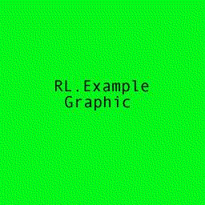

This file pretends to be an "article" type document
in the RL.Example module. It is written in simple HTML but contains <meta>
tags in the header which the RL will extract and use to create or update
a content repository item.
The content of this file could be loaded into a column
in the database that backs the repository. Or it can be left on the file
system and be accessed through the content repository item's getContentByKey()
method. The item descriptor for this document type is "htmlArticle."
It includes one of the images that have an item descriptor in the
RL.Example module. Here it is:

That's it!